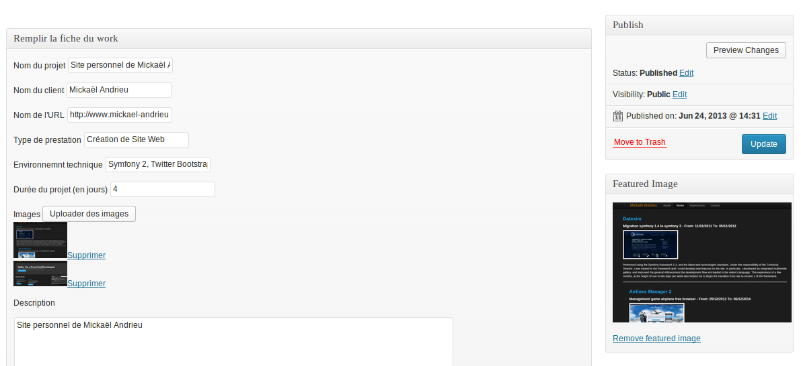
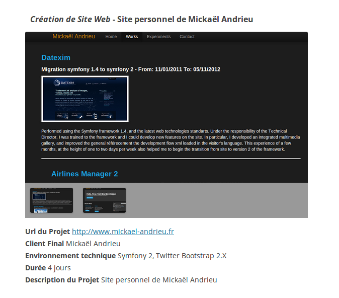

myPortfolio: affichez vos réalisations web sur Wordpress !
Description
myPortfolio est un plugin qui peut être utilisé dans le cadre d'une activité freelance ou étudiante.
En effet, il permet pour chaque projet avec les champs suivants:
- Nom du projet
- Nom du client
- Url du projet
- Technologies utilisées
- Durée du projet
- Gallerie d'images du projet
La gestion se fait dans le panel d'administration de Wordpress et un affichage est possible sur toute page ou article du blog.
Pour cela, il suffit d'utiliser le shortcode
[portfolio] dans l'éditeur de Wordpress, que ce soit au sein d'une page ou d'un article.
Installation
Téléchargez le plugin, et activez le: un nouveau panel "myPortfolio" est apparu dans le menu principal du panel d'administration de Wordpress.
Rendus

